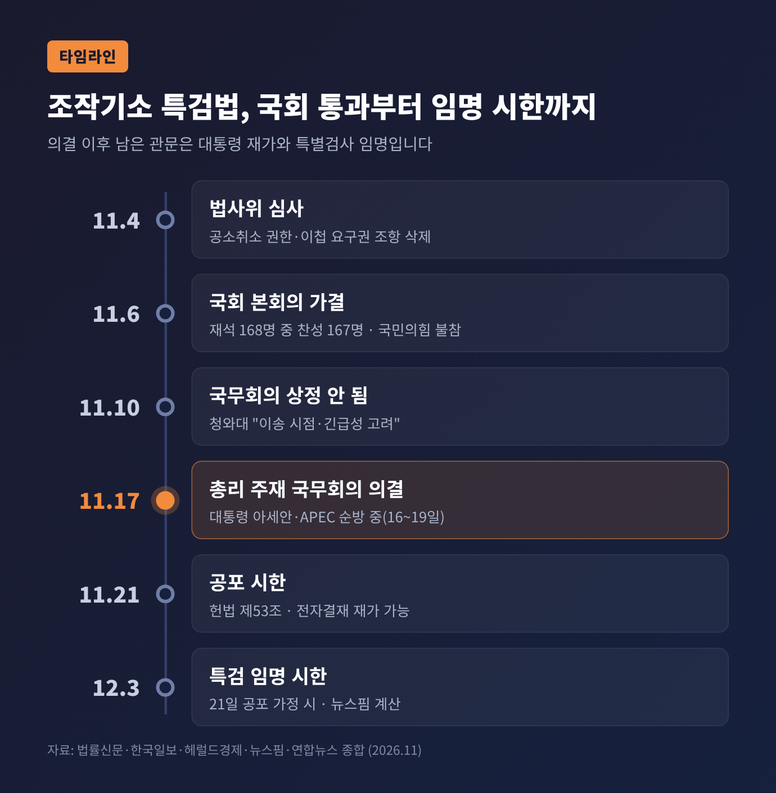
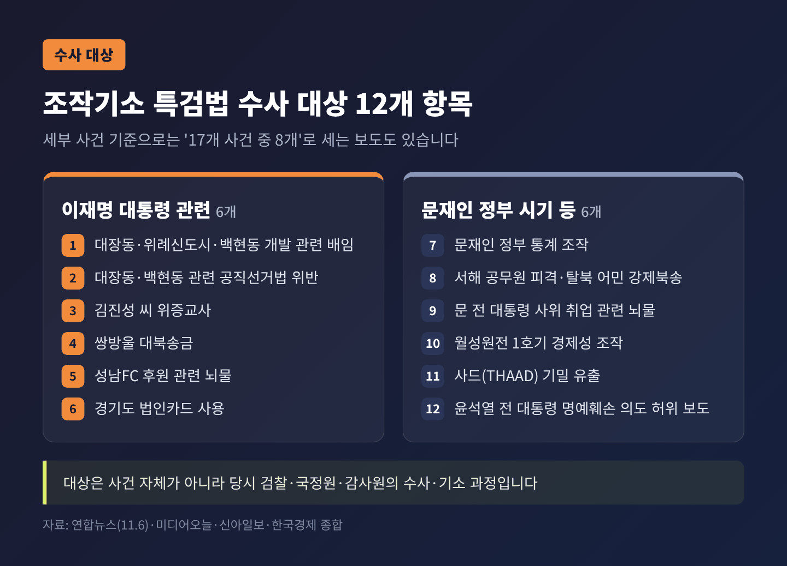
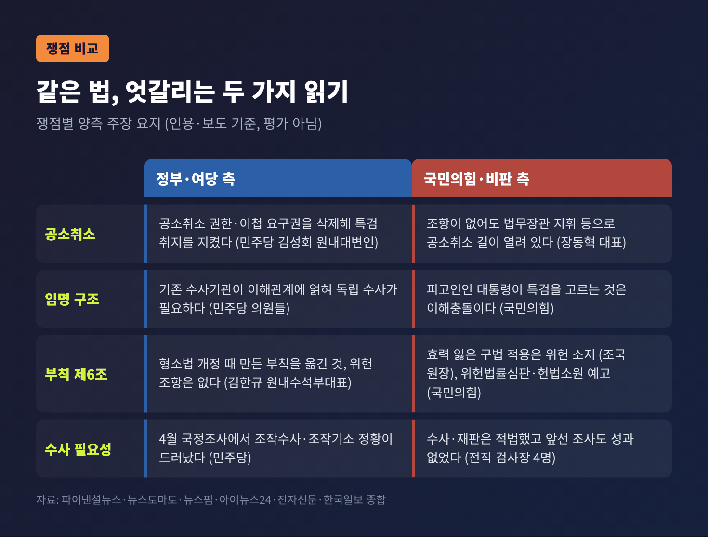
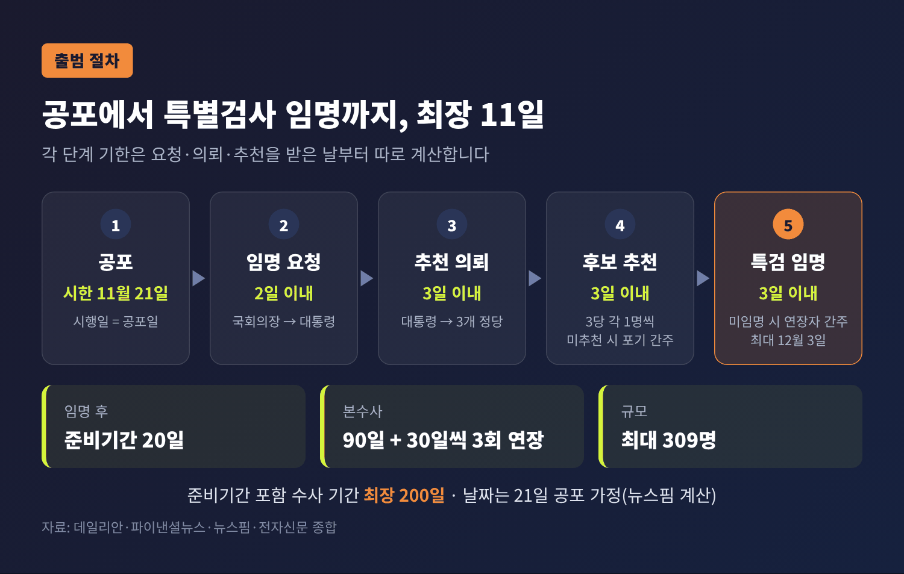

조작기소 특검법 국무회의 의결, 공포 이후 특검 출범 일정과 남은 쟁점
이번 글에서는 11월 17일 국무회의를 통과한 '조작기소 특검법'이 의결 이후 어디로 가는지 정리해 보겠습니다. 거부권 공방은 사실상 일단락됐고, 이제 질문은 '누가, 언제, 어떤 조건에서 수사를 시작하느냐'로 옮겨 갔습니다. 지난 글에서 다룬 공포 전 쟁점은 짧게 줄이고, 의결로 달라진 것과 여전히 남은 것을 중심으로 살펴봅니다.
세 줄 요약
- 대통령 순방 중 한성숙 국무총리 주재 국무회의가 공포안을 의결했습니다. 공포 시한은 11월 21일이며, 청와대는 거부권 가능성을 일축한 것으로 전해졌습니다.
- 공포되면 법정 절차상 최장 11일 안에 특별검사가 임명됩니다. 21일 공포를 가정하면 임명 시한은 12월 3일입니다.
- 수사 대상 12개 항목 중 6개가 이 대통령 관련 사건입니다. 공소취소 경로, 위헌 다툼, 예산 정국이 남은 변수입니다.

■ 무슨 일이 있었나 — 대통령 없는 국무회의에서 의결
11월 17일 오전, 정부서울청사에서 제49회 국무회의가 열렸습니다. 회의는 한성숙 국무총리가 주재했습니다. 이재명 대통령이 16일부터 19일까지 아세안·APEC 정상회의 참석차 필리핀과 중국을 순방하고 있기 때문입니다.
이 자리에서 '조작기소 특검법' 공포안이 심의·의결됐습니다. 정식 명칭은 '윤석열 정권 검찰청·국가정보원·감사원 등 국가기관의 조작수사·조작기소 등 의혹의 진상규명을 위한 특별검사 임명 등에 관한 법률'입니다. 국회 본회의 통과(11월 6일) 이후 11일 만이고, 현 정부 들어 일곱 번째 특검입니다.
의결 방식도 눈에 띕니다. 한국일보에 따르면 국무위원 13명이 참석했습니다. 총리의 공개 모두발언과 정부 브리핑에는 법안 언급이 없었고, 비공개 시간에 처리됐다고 파이낸셜뉴스와 미디어오늘은 전했습니다.
다만 의결만으로 법이 확정되지는 않습니다. 대통령이 재가해야 공포되고, 공포한 날부터 시행됩니다. 헌법 제53조에 따른 공포 시한은 11월 21일입니다. 순방 중에도 전자결재로 재가할 수 있어, 한국일보는 "이르면 이번 주" 공포를 점쳤습니다. 헤럴드경제는 청와대가 재가에 오래 걸리지 않을 것으로 보며 거부권 가능성을 일축했다고 보도했습니다. 17일 저녁 현재 재가가 끝났는지는 확인되지 않았습니다.

■ 왜 중요한가 — 공방의 무대가 국회에서 수사로 옮겨 간다
지난주까지의 쟁점은 '대통령이 거부권을 쓰느냐'였습니다. 국민의힘은 청와대 앞에서 거부권 행사를 요구했고, 공포 시한을 두고 줄다리기가 이어졌습니다.
이번 의결로 그 질문은 무게를 잃었습니다. 대신 세 가지 새 질문이 떠올랐습니다. 누가 특별검사가 되는가, 수사 결과가 진행 중인 재판에 어떤 영향을 주는가, 그리고 이 갈등이 연말 국회를 얼마나 묶어 둘 것인가입니다.
규모만 봐도 가볍지 않습니다. 수사팀은 특검 1명, 특검보 8명, 파견검사 20명, 특별수사관 70명, 파견공무원 210명 등 최대 309명입니다. 기간은 준비 20일과 본수사 90일에, 30일씩 세 차례 연장하면 최장 200일입니다. 국회예산정책처는 5월 발의안 기준 운영비를 380억 5,600만 원으로 추산했습니다. 연합뉴스는 최대 310여 명을 운용했던 내란특검과 비슷한 규모라고 짚었습니다.
■ 배경 — 무엇을 수사하나
수사 대상은 사건 자체가 아닙니다. 윤석열 정부 시절 검찰·국정원·감사원이 사건을 수사하고 기소하는 과정에서 조작이나 위법이 있었는지를 보는 것입니다.
12개 항목은 크게 둘로 나뉩니다. 절반인 6개는 이 대통령이 기소된 사건입니다. 대장동·위례신도시·백현동 개발 관련 배임, 대장동·백현동 관련 공직선거법 위반, 김진성 씨 위증교사, 쌍방울 대북송금, 성남FC 후원 관련 뇌물, 경기도 법인카드 사용 의혹입니다.
나머지 6개는 문재인 정부 시기 사건 등입니다. 통계 조작, 서해 공무원 피격과 탈북 어민 강제북송, 문 전 대통령 사위 취업 관련 뇌물, 월성원전 1호기 경제성 조작, 사드 기밀 유출, 그리고 윤석열 전 대통령 명예훼손을 의도한 허위 보도 의혹이 들어 있습니다.
셈법이 갈린다는 점은 알아 둘 만합니다. 대부분의 보도는 '12개 항목 중 6개'로 적습니다. 반면 한국경제는 세부 사건 기준으로 '17개 사건 중 8개'가 대통령 관련이라고 썼고, 국민의힘 이상휘 의원도 11일 예결위에서 같은 셈법을 썼습니다. 항목으로 세느냐 사건으로 세느냐의 차이로 보입니다.

■ 쟁점 ① — 공소취소 조항은 빠졌는데, 왜 논란은 남았나
원래 법안에는 특검이 공소를 취소할 수 있는 권한이 있었습니다. 11월 4일 법사위 심사에서 이 조항이 빠졌습니다. 기존 사건을 넘겨받아 공소유지 여부를 정하는 조항과 다른 수사기관 사건의 이첩 요구권도 함께 삭제됐습니다. 이 대통령이 9월 기자회견에서 공소취소 권한을 빼 달라고 요청한 데 따른 것이라고 헤럴드경제와 한국일보는 전했습니다.
여당은 이 점을 핵심 근거로 듭니다. 김성회 원내대변인은 공소취소 조항과 이첩 요구권을 삭제해 특검의 취지를 지켰다며, 법을 고쳤는데도 반대 이유가 그대로라고 반박했습니다.
국민의힘은 조항이 없어도 길은 있다고 봅니다. 장동혁 대표는 11월 5일 "공소취소 조항이 없어도 공소취소할 길이 열 길, 스무 길 열려 있다"고 주장했습니다. 특검 수사가 '조작'으로 결론 나면 법무부 장관의 지휘·감독을 거쳐 공소청이 공소를 거둘 수 있다는 논리입니다. 세계일보는 법조계 일부도 이런 가능성을 배제할 수 없다고 본다고 전했습니다.
이 대목에서 이용철 법무부 장관 후보자의 말이 자주 인용됩니다. 그는 11일 "공소 취소 입장에 변화가 없고 지금은 진상 규명에 집중할 때"라고 했습니다. 다만 결과에 따라 수사지휘권을 쓸 수 있느냐는 질문에는 "예측, 예단과 억측을 전제로 한 논란"에 의견을 내는 것은 적절하지 않다며 답을 피했습니다. 여당은 원칙론으로, 야당은 여지를 남긴 답으로 읽는 셈입니다.
■ 쟁점 ② — 이해충돌과 위헌 다툼
임명 구조도 논쟁거리입니다. 민주당·국민의힘·조국혁신당이 1명씩 추천하면 대통령이 1명을 고릅니다. 국민의힘은 자신이 피고인인 사건을 들여다볼 특검을 대통령이 직접 고르는 것은 이해충돌이라고 주장합니다. 검사 출신 이창현 한국외대 교수도 뉴스핌 인터뷰에서 "당연히 이해충돌에 해당하는 문제"라고 말했습니다. 반대로 민주당 의원들은 기존 수사기관 자체가 이해관계에 얽혀 있어 독립 수사가 필요하다고 맞섭니다.
위헌 논란의 초점은 부칙 제6조입니다. 지난달 형사소송법 개정으로 검사의 직접 수사가 막혔는데, 이 부칙은 특검과 파견검사에게 개정 전 법을 적용해 수사권을 줍니다. 범여권 안에서도 이견이 나왔습니다. 조국 조국혁신당 혁신정책연구원장은 "이미 효력을 잃은 구법을 적용한다는 것은 위헌·위법 문제를 일으킨다"며, 재판부가 위헌심판을 제청하면 재판이 멈출 수 있다고 경고했습니다. 민주당 김한규 원내수석부대표는 형소법 개정 때 마련한 부칙을 그대로 옮긴 것이라 "위헌이라고 보는 조항은 없다"고 반박했습니다.
법정 다툼은 이미 예고돼 있습니다. 국민의힘 박수영·김은혜 의원은 위헌법률심판과 헌법소원 등 모든 수단을 쓰겠다고 했습니다. 수사 대상에 오를 송경호 전 서울중앙지검장과 홍승욱·김유철·신봉수 전 수원지검장은 공동 입장문에서 이 법을 "형사사법 시스템을 근본적으로 훼손하는 위헌 법률"이라 부르며 적법성을 다투겠다고 밝혔습니다. 다만 누가, 언제, 어떤 경로로 헌법재판소 문을 두드릴지는 아직 구체적으로 확인되지 않았습니다.

■ 앞으로 — 특별검사 임명까지 최장 11일
공포되면 시계가 바로 돌아갑니다. 법이 정한 단계는 네 개입니다.
- 시행 후 2일 안에 국회의장이 대통령에게 임명을 요청합니다.
- 대통령은 3일 안에 정당에 후보 추천을 의뢰합니다.
- 각 정당은 3일 안에 후보 1명씩을 추천합니다.
- 대통령은 추천을 받은 날부터 3일 안에 1명을 임명합니다.
뉴스핌은 21일 공포를 가정해 날짜를 계산했습니다. 의장 요청 23일, 추천 의뢰 26일, 정당 추천 30일(29일이 일요일이라 하루 연장), 임명은 늦어도 12월 3일입니다. 파이낸셜뉴스는 "이르면 이달 말" 인선을, 한국일보는 이달 말에서 다음 달 초 임명을 내다봤습니다. 임명 뒤에는 20일의 준비기간이 있습니다. 임명이 시한인 12월 3일까지 간다면, 본수사는 12월 하순에야 시작되는 셈입니다.
변수는 국민의힘의 선택입니다. 기한 안에 추천하지 않으면 추천권을 포기한 것으로 봅니다. 불참해도 나머지 추천 후보로 절차는 이어집니다. 대통령이 기한 안에 임명하지 않으면 추천 후보 중 연장자가 임명된 것으로 간주하는 규정도 있습니다. 파이낸셜뉴스에 따르면 국민의힘 안에서 추천 불참이 거론되지만 결정되지는 않았습니다.

■ 수사 현장의 과제와 연말 정국
출범한다고 순탄한 것은 아닙니다. 첫째는 사람입니다. 지난달 2일 출범한 공소청과 중대범죄수사청 모두 인력이 부족하고, 공소청의 미제사건은 10월 말 기준 18만 3,815건이라고 한국일보는 전했습니다. 동료 검사를 수사하는 자리여서 파견을 꺼리는 분위기도 있습니다. 국민의힘 정점식 원내대표는 지난 10일 공소청·중수청에 파견을 거부하라고 요구하기도 했습니다.
둘째는 기록입니다. 대상 사건 상당수가 재판 중입니다. 법 제20조는 특검이 공소청·공수처·기존 특검 등에 기록 등본을 요청하고, 재판장에게 공판·증거기록 열람을 신청할 수 있게 했습니다. 재판장은 특별한 사유가 없으면 허가해야 합니다. 그럼에도 법원이 기록 제공에 신중하면 초기부터 차질이 생길 수 있다는 관측이 나옵니다. 앞선 진상조사에서 위법 정황이 뚜렷하지 않았다면 입증이 쉽지 않을 수 있다는 전망도 있습니다.
정치권은 더 얼어붙었습니다. 국민의힘은 의원 70여 명이 청와대 앞 의원총회 뒤 정부서울청사까지 약 800m를 행진했고, 전국 단위 장외집회를 이어 갈 계획입니다. '꼼수', '대리의결'이라는 비판도 나왔습니다. 대통령이 자리를 비운 날 총리에게 부담을 넘겼다는 주장입니다. 청와대는 앞서 공포안이 6일 오후에 이송됐고, "이송 시점, 긴급성의 정도 등을 고려해" 상정 시기를 정한다고 설명했습니다. 반면 민주당은 이번 의결을 "수사권 남용의 진실을 밝히는 출발점"이라 부르며, 국민의힘에 막말을 멈추고 특검에 협조하라고 촉구했습니다.
예산이 걸려 있다는 점이 가장 현실적인 문제입니다. 내년도 예산안의 법정 처리 시한은 12월 2일입니다. 국민의힘 법사위원들은 이미 9일 법사위 예산소위 등 일정에 불참하겠다고 밝혔고, 그날 소위는 여당 단독으로 진행됐습니다. 한국일보는 예산 심사 난항과 함께 이용철 후보자 인사청문회에도 여파가 미칠 것으로 내다봤습니다. 특검 임명 시한(12월 3일)과 예산 처리 시한(12월 2일)이 하루 차이로 겹친다는 점도 눈여겨볼 대목입니다.
예전에는 '법이 공포되느냐'가 관심사였습니다. 지금은 '수사가 어떤 결론을 내고, 그 결론을 누가 어떻게 쓰느냐'가 관심사입니다.
정리하면 이렇습니다. 의결로 절차의 불확실성은 줄었지만, 내용의 불확실성은 그대로입니다. 여당은 과거 수사기관의 권한 남용을 밝히는 일이라고 말하고, 국민의힘은 대통령 재판을 지우는 길이라고 말합니다. 아직 어느 쪽 주장도 수사 결과로 확인된 것은 없습니다.
"조항은 빠졌지만, 질문은 남았다" — 이번 의결을 한 줄로 줄이면 이렇습니다.
앞으로 두 주 동안 지켜볼 장면은 분명합니다. 대통령의 재가, 국민의힘의 추천 여부, 첫 위헌 다툼의 형식, 그리고 12월 2일 예산 시한입니다. 특검이 무엇을 찾아낼지 묻는다면, 지금은 그 답을 서두르지 않는 편이 맞다고 생각합니다.
출처
- 법률신문, 「대통령 순방중 '조작기소 특검법' 공포안, 국무회의 의결」 (2026.11.17) https://www.lawtimes.co.kr/news/articleView.html?idxno=229553
- 파이낸셜뉴스, 「'조작기소 특검법' 韓총리 대리 의결… 野 "이재명 탈옥법"」 (2026.11.17) https://www.fnnews.com/news/202611171834076356
- 파이낸셜뉴스, 「조작기소 특검 출범 초읽기...'인선·기록 확보' 과제」 (2026.11.17) https://www.fnnews.com/news/202611171401241196
- 세계일보, 「李대통령 공소취소 우려 속… 조작기소 특검법 의결」 (2026.11.17) https://www.segye.com/newsView/20261117515942
- 한국경제, 「韓, 조작기소특검법 의결…국정 블랙홀 되나」 (2026.11.17) https://hankyung.com/article/2026111728071
- 한국일보, 「이 대통령 순방 중 '조작기소 특검법' 국무회의 의결… 정국 경색 불가피」 (2026.11.17) https://www.hankookilbo.com/News/Read/A2026111715030002810
- 한국일보, 「'중대 논란 겹겹' 조작기소 특검 결국 출범…309명 매머드급 수사」 (2026.11.17) https://www.hankookilbo.com/news/article/A2026111714190005396
- 헤럴드경제 (2026.11.17) https://biz.heraldcorp.com/article/10939886
- 전자신문 (2026.11.17) https://www.etnews.com/20261117000302
- 뉴스핌 (2026.11.17) https://www.newspim.com/news/view/20261117000848
- 뉴스핌, 「[뉴스분석] 대통령 부재 중 '조작기소 특검법' 국무회의 통과…특검 임명권은 李대통령 손에」 (2026.11.17) https://www.newspim.com/news/view/20261117001070
- 미디어오늘, 「한성숙, 조작기소특검법 국무회의 의결…"이재명 탈옥법" 반발」 (2026.11.17) https://www.mediatoday.co.kr/news/articleView.html?idxno=338510
- 데일리안, 「민주·국힘·혁신당 1명씩 추천…조작기소 특검, 최종 선택은 대통령」 (2026.11.17) https://www.dailian.co.kr/news/view/1716074/
- 직썰, 「'조작기소 특검법' 국무회의 의결…재가 시 내달 309명 특검 출범」 (2026.11.17) https://www.ziksir.com/news/articleView.html?idxno=153662
- 연합뉴스, 「李대통령 관련 사건 포함 수사대상 12개…인력 최대 309명·기간 최장 200일」 (2026.11.06) https://www.koreancenter.or.kr/news/articleView.html?idxno=1435985
- 아이뉴스24, 「민주당 주도 '조작기소 특검법' 통과…조국도 "위헌 소지"」 (2026.11.06) https://inews24.com/view/2023649
- 뉴스토마토, 「7번째 특검은 '조작기소'…공취 빼도 '우회 가능'」 (2026.11.05) https://www.newstomato.com/ReadNews.aspx?no=1319475
- 뉴스토마토, 「특검·인청, 연말정국 승부처…국힘 첫날부터 '예산 보이콧'」 (2026.11.09) https://www.newstomato.com/ReadNews.aspx?no=1319759
- 연합뉴스, 「공소취소 지휘 가능성 묻자 "예측, 예단과 억측 전제로 한 논란"」 (2026.11.11) https://www.koreancenter.or.kr/news/articleView.html?idxno=1437659
- 연합뉴스, 「국힘 "특검 수사대상에 李대통령 관련 사건 포함돼 이해충돌"」 (2026.11.11) https://www.koreancenter.or.kr/news/articleView.html?idxno=1438024
- 스페셜타임스 (2026.11.10) https://www.specialtimes.co.kr/news/articleView.html?idxno=483877
#조작기소특검법 #특검법국무회의의결 #특별검사임명 #공소취소논란 #한성숙총리 #국민의힘 #더불어민주당 #예산안심사